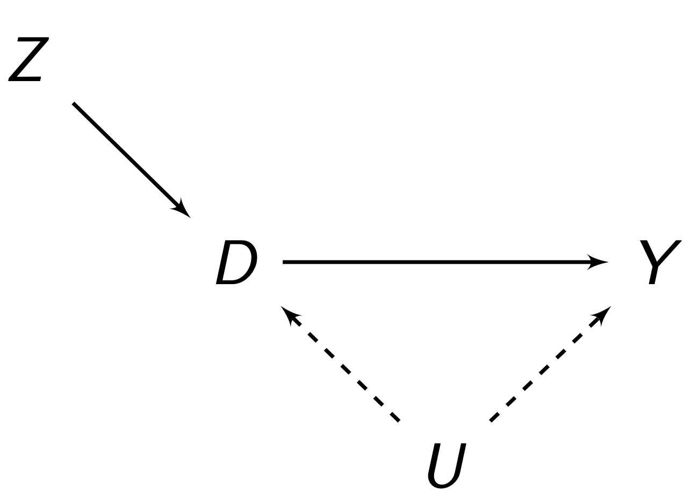
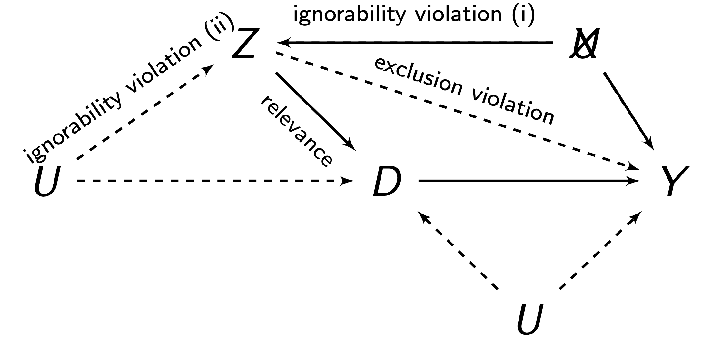

6 Method of Moments
So far, we have covered estimators that require accurate model specification/form in the form of exogeneity, that the regressors and error terms are uncorrelated.
In this chapter, we introduce the method of moments estimator, an alternative way to estimate parameters that requires little knowledge about the form of our data. Specifically, we will explore the instrumental variables estimator, which helps us deal with violations of exogeneity which the previous estimators cannot deal with.
6.1 Moments and Estimation
In our original ordinary least squares estimator, we required 5 conditions: linearity, i.i.d., no perfect multicollinearity, exogeneity, and spherical errors. In the generalised least squares estimator, we dropped the spherical errors condition. In the maximum likelihood estimator, we dropped the spherical errors and linearity condition.
However, all of these estimators require exogeneity. We previously defined exogeneity (definition 5.4, definition 5.5) as explanatory variables being uncorelated with the error term. However, exogeneity can also be described in another way - proper model specification. After all, exogeneity is only met if we properly specify our data generating process to seperate the mean \(\mu_Y\) and variance of error \(\sigma^2\).
What if we cannot meet this proper model specification of the data generating process? An alternative estimator is possible - the method of moments estimator. The method of moments estimator requires very few assumptions about the form of our model. Importantly, we do not even need to know the probability density function of our data generating process.
The method of moments focuses on the moments of a distribution. Let us review what moments are. The \(k\)th raw moment is defined as
\[ \mu_k = \E(X^k) \]
Where the first moment \(\mu_X^1\) is the expectation itself. There are also central moments, which are defined as
\[ \mu_k^1 = \E((X - \E X)^k) \]
The method of moments equates each \(k\) moment with the sample equivalent:
\[ \mu_k = \E(X^k) \ \approx \ \frac{1}{n}\sum\limits_{t=1}^nx_t^k \]
So we equate the first moment \(\mu_X^1\) with the first sample moment, the second moment \(\mu_X^2\) with the second sample moment, and so on.
We should have as many moments-sample moment combinations as we have unknown parameters. Once we have our moments, we can solve for our parameters. In the next section, we will go over the simple example of a sample-mean and variance estimator.
Because of the law of large numbers (theorem 2.1), method of moments estimators as asymptotically consistent estimators. These estimators are also very simple - we do not require any information about the data generating process besides its moments.
6.2 Mean and Variance Estimator
Let us show how we can use method of moments to estimate the mean and variance of a population from a sample. Let \((x_1, \dots, x_n)\) be a sample from a population with mean \(\mu\) and variance \(\sigma^2\). We want to use our method of moments estimator to find the true value of these two parameters.
Since we have two parameters, we will need two moments. Our first moment \(\mu_1\) is
\[ \mu_1 = \E(X^1) = \mu \ \approx \ \frac{1}{n}\sum\limits_{t=1}^n x_t \]
And our second population moment is
\[ \mu_2 = \E(X^2) \ \approx \ \frac{1}{n}\sum\limits_{t=1}^nx_t^2 \]
We can rewrite our second population moment from \(\E(X^2)\) as the following:
\[ \E(X^2) = \E(X-\mu)^2 + 2\mu \E(X) - \E(\mu)^2 \]
You can prove this by multiplying out and cancelling the right hand side. We can simplify this expression using the definition of variance (definition 1.3) and property of expectations to get
\[ \begin{align} \E(X^2) & = \E(X-\mu)^2 + 2\mu \E(X) - \E(\mu)^2 \\ & = \sigma^2 + 2\mu \mu - \mu^2 \\ & = \sigma^2 + \mu^2 \end{align} \]
Thus, we see the second population moment is equivalent to \(\sigma^2 + \mu^2\). Thus, our two moment conditions, and their sample equivalents are:
\[ \begin{align} & \E(X^1): \mu \approx \frac{1}{n} \sum\limits_{t=1}^n x_t \\ & \E(X^2) : \mu^2 + \sigma^2 \approx \frac{1}{n} \sum\limits_{t=1}^nx_t^2 \end{align} \]
Thus, our sample estimate for sample mean \(\hat\mu\) will be the first moment condition
\[ \hat\mu = \frac{1}{n} \sum\limits_{t=1}^n x_t \]
And our sample estimate \(\sigma^2\) will be a rearranged version (isolating \(\sigma^2\)) of the second moment condition
\[ \begin{align} \hat\sigma^2 & = \frac{1}{n}\sum\limits_{t=1}^n x_t^2 - \hat\mu^2 \\ & = \frac{1}{n}\sum\limits_{t=1}^n (x_t^2 - \hat\mu)^2 \end{align} \]
And as we can see, according the the law of large numbers (theorem 2.1), and the definition of expectation (definition 1.2) and variance (definition 1.3), that both these estimators are asymptotically consistent.
This is a simple example of the implementation of the method of moments. From now on, we will focus on more complex cases of the method of moments, and how they can be used to address some of the issues with past estimators.
6.3 Moments of Least Squares
The ordinary least squares estimator can be written as a method of moments estimator. Recall that the classical linear model
\[ Y \sim \mathcal N(\b{X\beta}, \sigma^2) \]
We can split this model into two sections - the expected \(Y\) and the variance:
\[ \b y = \underbrace{\b{X\beta}}_{\mu_Y} \ + \ \underbrace{\b\eps \sim \mathcal N(0, \sigma^2)}_{\text{error term}} \tag{6.1}\]
Where \(\mu_Y = \E(Y|X)\), and the error term explains the variation/randomness where not all \(Y\) are exactly at the expectation \(\mu_Y\). For the OLS estimator, we are interested in the central moment of \(Y\):
\[ \mu_1' = \E(Y - \E(Y|X)) = \E( \b y - \b{X\beta} \ | \ \b X) = \E (\b\eps | \b X) \]
And since we know from eq. 6.1 that \(\b\eps\) by assumption has a expectation of 0, we get:
\[ \mu_1' = \E(\b\eps | \b X) = 0 \]
However, there is an issue with this condition - this will only produce one equation to solve, when we have \(p\) parameters that need to be estimated for OLS. The solution to this is to multiply the central moment condition by \(\b X\):
\[ \b X^\top \underbrace{\E(\b\eps | \b X)}_{= \ 0} = 0 \]
And this statement is still true since anything multiplied to 0 equals 0. Now, using the properties of exepctations, we can include \(\b X\) within the expectation since it is a constant considering our expectation conditions of \(\b X\):
\[ \E( \b X^\top \b \eps | \b X) = 0 \]
And using the law of iterated expectations (theorem 1.3), we know
\[ \E(\b{X^\top \eps}) = \E[\E( \b X^\top \b \eps | \b X)] = \E[0] = 0 \]
Thus, we have our moment condition of OLS.
Definition 6.1 (OLS Moment Condition) The moment conditions of the ordinary least squares estimator is:
\[ \E(\b{X^\top \eps}) = 0 \]
Notice anything about this moment condition? It is exactly in the same form as our definition of exogeneity (definition 5.4). This is another reason why exogeneity is an important condition in OLS - when violated, our moment condition is invalid.
To actually estimate OLS coefficients \(\hat{\b\beta}\) with method of moments, we use our sample equivalents:
\[ \E(\b X^\top \b\eps) \approx \b X^\top \hat{\b\eps} = 0 \]
Where we can rewrite with the fact that \(\hat{\b\eps} = \b y - \hat{\b y}\), and that \(\hat{\b y} = \b{X\hat\beta}\). Thus, we get
\[ \begin{align} \b X^\top (\b y - \hat{\b y}) & = 0 \\ \b X^\top(\b y - \b X \hat{\b\beta}) & = 0 \\ \b{X^\top y} - \b{X^\top X \hat\beta} & = 0 \end{align} \]
Now solving for \(\b{\hat\beta}\) with matrix inversion, we get:
\[ \begin{align} - \b{X^\top X \hat\beta} & = - \b{X^\top y} \\ \b{X^\top X \hat\beta} & = \b{X^\top y} \\ \hat{\b\beta} & = (\b{X^\top X})^{-1}\b{X^\top y} \end{align} \]
And we can see, we get the same solution as OLS (definition 5.8). Thus, OLS is a method of moments estimator.
6.4 Instrumental Variables
Recall the OLS method of moments condition (definition 6.1):
\[ \E(\b{X^\top \eps}) = 0 \]
As mentioned above, this is equivalent to the exogeneity condition (definition 5.4) - that the regressors \(\b X\) are uncorrelated with the error term \(\b \eps\). However, what if this is violated? Our OLS estimates become biased, because exogeneity is a key condition in establishing the unbiasedness of OLS (theorem 5.2).
The instrumental variables estimator is a solution to this issue. The idea is to find a third variable (or more) \(Z\), that does meet this condition of exogeneity. Then, we will have the new condition
\[ \E(\b{Z^\top \eps}) = 0 \]
and we will have no exogeneity if \(Z\) is not correlated with the error term. We then use these instruments \(Z\) to predict \(X\), which will get us the parts of \(X\) that are explained by \(Z\) (and thus, uncorrelated with the error term). Then, we can use that exogenous part of \(X\) to estimate the relationship with \(Y\). However, this hinges on \(Z\) meeting that moments condition.
Definition 6.2 (Assumptions of Instruments) For instrument(s) \(Z\) to meet the moment condition \(\E(\b{Z^\top \eps}) = 0\), the following facts must be true:
- \(Z\) must be exogenous/ignorable, i.e. \(Cov(Z, \eps) = 0\).
- \(Z\) must be relevant, i.e. \(Cov(Z, X) ≠ 0\).
- \(Z\) must meet the exclusions restriction (which is implied by exogenous). This means that \(Z\) cannot have an independent effect on \(Y\), outside of its impact on \(Y\) through \(X\).

The classic instrument setup is as above. We want to find the relationship between \(D\) and \(Y\). However, there is some unobserved variable \(U\) that is not in our regression, so it is in our error term \(\eps\). But because \(U\) is correlated with \(D\) and \(Y\) and in the error term \(\eps\), it implies \(D\) is correlated with the error term \(\eps\), violating exogeneity.
To solve this, we introduce an instrument \(Z\). By using \(Z\) to predict \(D\), we are only using the part of \(D\) that is explained by \(Z\). That part of \(D\) is not explained by \(U\), so that part of \(D\) is now exogenous, and we can estimate the relationship between \(D\) and \(Y\).

This figure shows potential violations of the assumptions of instrument \(Z\), when trying to measure the relationship between \(D\) and \(Y\). Finding a valid instrument is very difficult, but possible. However, it typically takes a lot of domain knowledge to get a good instrument.
6.5 Instrumental Variables Estimator
So we know what an instrument \(Z\) is, and the requirements for \(Z\) to be a valid instrument. But how does \(Z\) help us estimate the effect between \(X\) and \(Y\)?
Our moment condition and sample equivalent for instrumental variables is:
\[ \E(\b{Z^\top \eps}) \approx \b Z^\top \b\eps = 0 \]
Now, we know that \(\b\eps = \b y - \hat{\b y}\) and \(\hat{\b y} = \b{X\hat\beta}\), so let us plug that in:
\[ \begin{align} \b Z^\top (\b y - \hat{\b y}) & = 0 \\ \b Z^\top (\b y - \b{X \hat\beta}) & = 0 \\ \b{Z^\top y} - \b{Z^\top X \hat\beta} & = 0 \end{align} \]
And now, solving for \(\hat{\b\beta}\) with matrix inversion, we get:
\[ \begin{align} - \b{Z^\top X \hat\beta} & = - \b{Z^\top y} \\ \b{Z^\top X \hat\beta} & = \b{Z^\top y} \\ \hat{\b\beta} & = (\b{Z^\top X})^{-1} \b{Z^\top y} \end{align} \]
Definition 6.3 (Instrumental Variables Estimator) The IV estimator produces the estimates:
\[ \hat{\b\beta}^* = (\b{Z^\top X})^{-1} \b{Z^\top y} \]
The instrumental variables estimator is a biased estimator in finite samples. This means we should be careful about using the instrumental variables in small sample sizes. However, it is asymptotically consistent (as we will demonstrate in the next section). This means that IV can give us good estimates of \(\b\beta\) in large sample sizes even if \(X\) is not exogenous.
Theorem 6.1 (IV Bias) Instrumental variables estimator is a biased estimator.
Proof: Let us plug in the true model \(\b y = \b{X\beta} + \b \eps\) into the IV estimator (definition 6.3) to get
\[ \begin{align} \hat{\b\beta}^* & = (\b{Z^\top X})^{-1} \b{Z^\top y} \\ & = (\b{Z^\top X})^{-1} \b{Z^\top}(\b{X\beta} + \b \eps) \\ & = \underbrace{(\b{Z^\top X})^{-1} \b{Z^\top X}}_{\text{inverses cancel}}\b\beta + (\b{Z^\top X})^{-1} \b{Z^\top\eps} \\ & = \b\beta + (\b{Z^\top X})^{-1} \b{Z^\top\eps} \end{align} \tag{6.2}\]
Now, let us consider the conditional expectation of \(\hat{\b\beta}^*\) in respect to both \(\b X\) and \(\b Z\):
\[ \E(\hat{\b\beta}^* | \b X, \b Z) = \E( \b\beta + (\b{Z^\top X})^{-1} \b{Z^\top\eps} \ | \b X, \b Z) \]
Now, let us take out the constants from the expectation to get:
\[ \E(\hat{\b\beta}^* | \b X, \b Z) = \b\beta + (\b{Z^\top X})^{-1} \b{Z^\top} \E(\b\eps | \b X, \b Z) \]
Because \(\b X\) is endogenous (and violates exogeneity), we know \(\E(\b\eps | \b X, \b Z) ≠ 0\). Thus, we cannot simplify this expression like we did for OLS. Thus, the instrumental variables estimator is biased.
6.6 Asymptotics of IV
Despite being biased, the instrumental variables estimator is an asymptotically consistent estimator of \(\b\beta\) even with exogeneity between \(X\) and \(\eps\) violated (as long as \(Z\) is exogenous).
Theorem 6.2 (IV Consistency) The IV estimator is asymptotically consistent, meaning
\[ \mathrm{plim}\hat{\b\beta}^* = \b\beta \]
Proof: Let us start from where we left off in eq. 6.2. We can rewrite our matrices in the form of vectors, scalars, and summation, just as we did in the proof of OLS consistency (theorem 5.4). We thus get
\[ \begin{align} \hat{\b\beta}^* & = \b\beta + (\b{Z^\top X})^{-1} \b{Z^\top\eps} \\ & = \b\beta + \left(\sum\limits_{t=1}^n \b z_t \b x_t^\top \right)^{-1} \left(\sum\limits_{t=1}^n \b z_t \eps_t \right) \end{align} \]
Now, let us do a little algebra trick as follows:
\[ \hat{\b\beta}^* = \b\beta + \left(\frac{1}{n}\sum\limits_{t=1}^n \b z_t \b x_t^\top \right)^{-1} \left(\frac{1}{n}\sum\limits_{t=1}^n \b z_t \eps_t \right) \]
The reason we can do this is because the first \(\frac{1}{n}\) is inversed as \(\frac{1}{n}^{-1}\), so this cancels out the second one, maintaining the equality of our equation.
Now, we want to prove \(\mathrm{plim}\hat{\b\beta}^* = \b\beta\), so let us take the probability limit of both sides:
\[ \mathrm{plim}\hat{\b\beta}^* = \mathrm{plim}\b\beta + \left(\mathrm{plim}\frac{1}{n}\sum\limits_{t=1}^n \b z_t \b x_t^\top \right)^{-1} \left(\mathrm{plim}\frac{1}{n}\sum\limits_{t=1}^n \b z_t \eps_t \right) \]
We know the probability limit of a constant is itself. Look at the other two terms on the right: they take the form of sample averages \(\frac{1}{n}\sum\). Using the law of large numbers (theorem 2.1), we can simplify to:
\[ \mathrm{plim}\hat{\b\beta}^* = \b\beta + (\E(\b z_t \b x_t^\top))^{-1} \underbrace{\E(\b z_t \eps_t)}_{= \ 0} = \b\beta \]
And we know \(\E(\b z_t \eps_t) = 0\) because this is the same condition as the moment condition \(\E(\b{Z^\top \eps}) = 0\), just written in terms of individual observations. Thus, the Instrumental variables estimator is asymptotically consistent.
It can also be shown that the asymptotic variance of the instrumental variables estimator, under the assumption of spherical errors is
\[ \V \hat{\b\beta}^* = \sigma^2(\b{Z^\top X})^{-1} \b{Z^\top Z} (\b{X^\top Z})^{-1} \]
Although the proof of this is beyond the scope of this chapter. There is also a more complex derivation for robust standard errors with instrumental variables estimation.
6.7 Two Stage Least Squares
While sometimes we do compute the instrumental variables estimator as shown in definition 6.3, often, we use another estimator, the two-stage-least-squares (2SLS) estimator.
The 2SLS estimator is based on the intuitive interpretation of instrumental variables: that we use only the part of \(X\) explained by \(Z\) (which should be endogenous), and estimate that part of \(X\)’s relationship with \(Y\).
The two stage least squares estimator follows this exact procedure. In the first stage, we find the part of \(X\) that is explained by \(Z\), which we call \(\hat X_t\):
\[ \hat X_t = \hat\beta_0 + \hat\beta_1 Z_t \]
We do this by running a linear OLS model with \(X_t\) as the outcome variable, and \(Z_t\) as the explanatory variable. Our predicted \(\hat X_t\) will be the part of \(X\) explained by instrument \(Z\).
Then, for the second stange, we take this \(\hat X_t\), and use it in a model with \(Y\) as follows:
\[ Y_t = \delta_0 + \delta_1 \hat X_t + \eps_t \]
How is 2SLS in these two stages equal to instrumental variables estimator we derived in definition 6.3? Our estimates (in matrix form) for the second stage would be:
\[ \hat{\b\beta}_{2SLS} = (\hat{\b X}^\top \hat{\b X})^{-1} \hat{\b X}^\top \b y \tag{6.3}\]
Where \(\hat{\b X}\) is given as the fitted values of the first stage:
\[ \hat{\b X} = \b Z \hat{\b \delta} = \b Z (\b{Z^\top Z})^{-1}\b{Z^\top X} \]
We can plug \(\hat{\b X}\) into eq. 6.3 to get:
\[ \hat{\b\beta}_{2SLS} = [(\b Z (\b{Z^\top Z})^{-1}\b{Z^\top X})^\top (\b Z (\b{Z^\top Z})^{-1}\b{Z^\top X})]^{-1}(\b Z (\b{Z^\top Z})^{-1}\b{Z^\top X})^\top \b y \]
Using the properties of matrix transposes, we get:
\[ \begin{align} \hat{\b\beta}_{2SLS} & = [(\b X^\top \b Z (\b{Z^\top Z})^{-1} \b Z^\top) (\b Z (\b{Z^\top Z})^{-1}\b{Z^\top X})]^{-1}(\b X^\top \b Z (\b{Z^\top Z})^{-1} \b Z^\top)\b y \\ & = [\b X^\top \b Z \underbrace{(\b{Z^\top Z})^{-1} \b Z^\top \b Z}_{\text{inverses cancel}} (\b{Z^\top Z})^{-1}\b{Z^\top X}]^{-1}\b X^\top \b Z (\b{Z^\top Z})^{-1} \b Z^\top\b y \\ & = (\underbrace{\b X^\top \b Z (\b{Z^\top Z})^{-1}}_{\text{cancel}}\b{Z^\top X})^{-1}\underbrace{\b X^\top \b Z (\b{Z^\top Z})^{-1}}_{\text{cancel}} \b Z^\top\b y \\ & = \underbrace{(\b{Z^\top X})^{-1} \b{Z^\top y}}_{\text{equal to IV}} \end{align} \]
And the second to last step is possible because one of the highlighted “cancel” parts is within an inverse and the other isn’t, so they cancel. Thus, we have shown 2SLS is equivalent to the instrumental variables estimator.
The main advantage of 2SLS is that we can include control variables in both stages. For example, recall this figure we saw previously:
We want to uncover the effect of \(D\) on \(Y\). Imagine that we only have one of the violations above, the one notated ignorability violation (i). In this case, \(Z\) is not exogenous to \(Y\), because \(Z\) and \(Y\) are correlated with the confounder \(M\) which is in the error term, meaning \(Z\) is correlated with the error term.
However, if we included \(M\) in our model for both stages, then \(Z\) would be exogenous, since \(M\) would be a part of our model and not the error term \(\eps\) anymore.